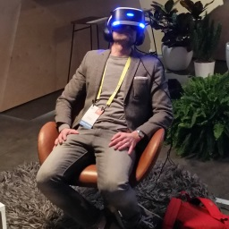
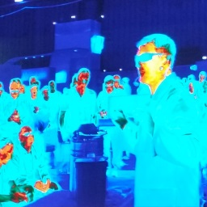
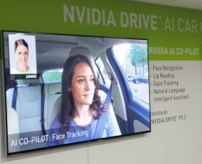
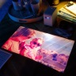
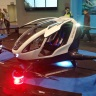

CES 2017: A Developer's Perspective
A developer's perspective on technology and trends at CES 2017.
Author: Matthew Renze
Posted: 2017-01-09

As a life-long geek, I've dreamed of attending the Consumer Electronics Show (CES) since I first heard about it in the late '80s. It was right around the time video-game consoles were switching from 8-bit to 16-bit processors. I dreamed of walking down long aisles of computers, electronics, gadgets, and more. So, this year, I finally made that dream a reality by attending my first-ever CES.
As a software developer, I find CES interesting now for an entirely new set of reasons than I did as a teenager. So, I'd like to provide you with a perspective of CES through the eyes of a fellow software developer. I'll attempt to explain the new trends and technologies that I saw, why they are of importance to developers, and what they say about the future of our industry.
Virtual Reality
I think it's safe to say that virtual reality (VR) will enter the mainstream in 2017. The shear amount of VR technologies at CES was overwhelming. In addition, it seemed that everyone had VR at their booths, even if their products had nothing to do with VR. The floor space devoted to new VR technologies alone was quite impressive.
As a developer, this is very exciting time, as it means we've finally entered the era of VR computing. We'll now be able to interact with software as virtual worlds in very natural ways. What this means for our future as software developers is no less than a fundamental shift in the types of software, games, and entertainment that can be created.
If VR development is of interest to you, I highly recommend looking into cross-platform development tools like Unity3D and the Unreal Engine. With these tools, you can build a VR application once, and deploy it to multiple hardware platforms. However, you still need to be smart about user-interface design in order to support a range of interactions from a simple gaze-and-click to more advanced motion-tracking.
Augmented Reality
In addition to virtual reality, Augmented Reality (AR) made a big splash at CES this year as well. Unlike VR, where we project a virtual world into our senses, with AR, we overlay software on top of the real world in front of us. Several vendors were demoing their AR equivalents to Google Glass and Microsoft HoloLens. It appears mainstream AR may be coming much sooner than I had originally anticipated.
While the Microsoft HoloLens is a completely self-contained computer that you wear on your head, I get the impression that many future AR devices will be much more light-weight goggles or glasses. This means that they will likely be connected to your smart phone for processing, storage, and connectivity.
Given this, many day-to-day activities that we perform using our mobile-device screens will likely be performed via AR goggles, glasses, and heads-up-displays. I saw demonstrations involving everything from AR-assisted driving, cycling, manufacturing, medicine, and education. If you're a mobile developer, this means a whole new set of mobile AR apps will need to be built for a variety of everyday activities.
Internet of Things
As I walked down rows upon rows of major electronics, appliances, and home gadgets, it seemed that everything is now smart, connected, and wireless. Televisions, refrigerators, lights, sensors, and more, were all talking to one another. It appears that the Internet of Things (IoT) will soon be everywhere and in every device.
In fact, I saw devices talking to one another that I never imagined would need to communicate. For example, turning on a smart stovetop would communicate wirelessly to the ventilation hood and automatically turn on the exhaust fan for you. I even saw a sous-vide cooking a steak to perfection while exactly timing the preparation of the vegetables to accompany it.
From a developer perspective, this means that almost everything in our lives is on the verge of being an internet-enabled device for us to program. We will have mountains of new code to write for these devices and an ocean of data to analyze. If you're interested in anything from low-level firmware programming to IoT analytics in the cloud, a whole new world of development is emerging as we speak.
Artificial Intelligence
While we're just beginning to see mainstream Artificial Intelligence (AI) in our homes, automobiles, and smart phones, the demos I saw at CES showed that AI is definitely the way of the future. It seems everyone is trying to integrate AI and Machine Learning (ML) into everyday devices.
NVidia's automotive AI called Drive was the most interesting new AI technology I saw at CES. In addition, Faraday Future had a big reveal with their new self-driving electric car, the FF91, that can do zero-to-60 mph in 2.39 seconds. For automotive enthusiasts, that's even faster acceleration than a Tesla Roadster.
In college, my focus was AI and ML, so I've been preparing for this new wave of computing for many years now. If these technologies are of interest to you, now is the time to get started learning how to develop AI and ML applications. If you start learning these technologies now, by the time you are proficient with them, it is likely that the job market will reward you handsomely for your new skillset.
Other Technologies
3D Printers
There were many consumer-level 3D printers on display from a variety of manufacturers at CES. It's probably no surprise anymore that 3D printing will likely revolutionize manufacturing as we know it. This revolution will require a wide range of software including laser-scanning tools, CAD tools, 3D-printer firmware, and more.
Displays
There were significant improvements in 4k-display technologies (e.g. super-thin OLED displays and quantum-dot displays). In addition, 8k displays are also on the horizon. However, there were also new types of displays like ultra-short-throw projectors, tile-based displays, and holographic displays. The next generation of software will need to be built for high-resolution displays and support multiple form factors.
{kind=link}
{kind=link}
Drones
I knew drones were going to be a hot item at CES this year, but I had no idea how many new drones there would be. If something exists in the physical world that needs to be inspected, monitored, or delivered it appears there will be a specific drone for the task. This is good for developers, because drones need code to function and the data they collect will need to be analyzed.
Robots
While we're probably still several years away from fully-autonomous household robots that make us dinner, fold our laundry, and walk our dog, there were several new robots on display at CES this year. I saw industrial vacuum robots, robot lawn mowers, personal assistant robots, and more. Robots run on code, so it will be up to us developers to program them until they eventually learn to program themselves.
Take Away
All in all, CES 2017 was an amazing experience. I learned a tremendous amount about the direction the industry is moving, what technologies will likely be hot, and I saw several cutting-edge ideas as well. If you ever get a chance to attend CES yourself, I highly recommend it. Just be sure to wear comfortable shoes, travel light, and bring a back-up battery for your cell phone.
From a developer perspective, CES confirms that it's a great time to be in our profession. If this year's CES is any indication of the future, we have a lot of work in store of us. We have tons of new code that will need to be written for VR, AR, AI, and IoT. In addition, we will have a flood of new data to analyze as well. So, now that CES is over, it's time to put on our developer caps and get to work.
Share this article: